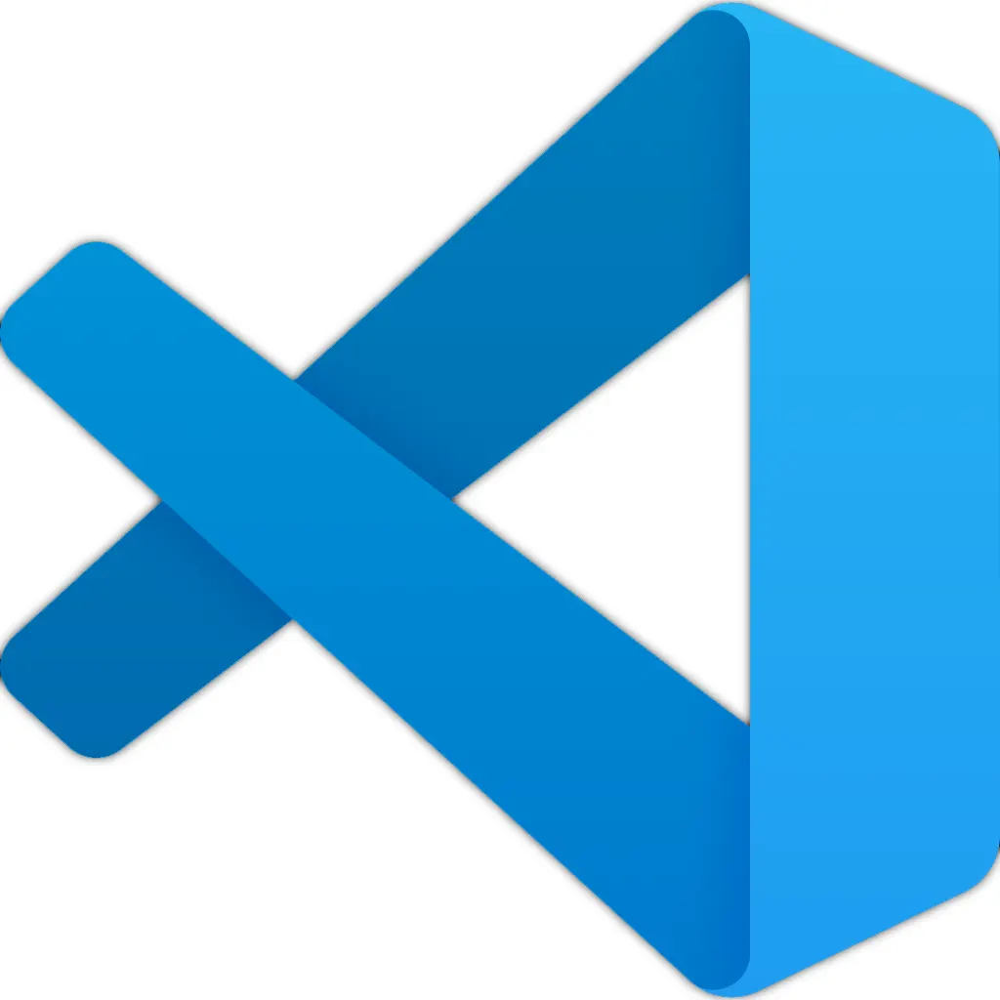

VS CODE
作為開發者最重要的開發工具，VS CODE是現今最熱門之一的主流編輯器，作為一個超熱門的編輯器其用途並不僅限於網頁開發，在安裝各種套件及設置環境後也能進行其他程式語言如:Python、Java、C/C++。
俗話說工欲善其事，必先利其器，在VS CODE中有各種擴充套件供免費使用，善用套件可以使開發時間縮短一倍以上。

網頁開發分為前端與後端，本站內容皆為前端部份，以下先介紹前端開發不可或缺的工具及環境。
作為開發者最重要的開發工具，VS CODE是現今最熱門之一的主流編輯器，作為一個超熱門的編輯器其用途並不僅限於網頁開發，在安裝各種套件及設置環境後也能進行其他程式語言如:Python、Java、C/C++。
俗話說工欲善其事，必先利其器，在VS CODE中有各種擴充套件供免費使用，善用套件可以使開發時間縮短一倍以上。
身為一個有良好習慣的開發者一定要使用版本控制管理自己的專案，在這邊推薦使用Git搭配GitHub平台，
在Windows環境下VS CODE預設終端機為powerShell，使用ctrl+`可以快速開啟終端機介面由於Windows平台沒有自帶Git控制系統(Linux、Mac系統則有)，必須從Git官網下載安裝後才可以在終端機內使用。